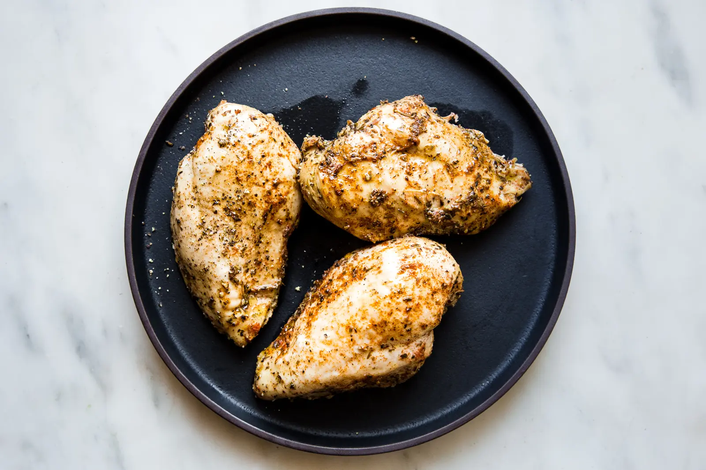

Instapot Chicken

A real simple chicken recipe. Can make shreded chicken from this and put into eggs, burritos, tacos, or even have in by itself!
Ingredients
- Chicken stock
- Boneless, skinless, chicken breast(Thawed or frozen)
- Italian seasoning, oregano, basil or thyme
- Garlic powder
- Brown sugar
- Kosher salt
- Pepper
Directions
- pour in some chicken stock.
- Season chicken breasts with all of the spices and herbs.
- Put the Chicken in the pot and lock the lid. Make sure vent is in the closed position.
- Pressure cook on high for 15 min
- Wait 10 minutes once it finishes, to allow it to naturually depressurize. Then CAREFULLY move the vent to open.
- Take out chiccken and enjoy! Make sure it's done though.